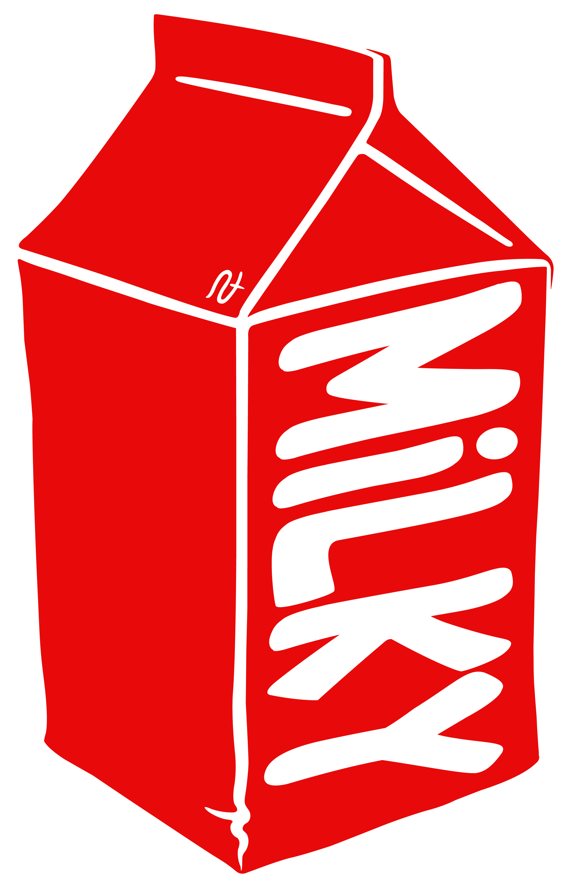

Live Lattice Generator
Pattern
Grid
Warp
Apply warp to
Layers
Shaders
Tints pattern lines (layer-only)
Canvas

Export a single layer (transparent BG) or the full composite.
Per-layer PNG (transparent)
Per-layer SVG (vector)